This chapter presents a series of programs that perform more complicated tasks than most of the examples found throughout the earlier chapters of the book. They illustrate a variety of programming techniques and demonstrate a particular programming style.
Each section of this chapter describes one program in detail and gives examples of its use. This is followed by a listing of the code. At the end of each section are exercises intended to stimulate thought about the program and to suggest possible extensions. These exercises are generally more difficult than those found in Chapters 2 and 3, and a few are major projects.
Section 12.1 presents a simple matrix multiplication package. It demonstrates a set of procedures that could be written in almost any language. Its most interesting features are that all multiplication operations are performed by calling a single generic procedure, mul, which calls the appropriate help procedure depending upon the dimensions of its arguments, and that it dynamically allocates results of the proper size. Section 12.2 presents a merge sorting algorithm for ordering lists according to arbitrary predicates. Section 12.3 describes a syntactic form that is used to construct sets. It demonstrates a simple but efficient syntactic transformation from set notation to Scheme code. Section 12.4 presents a word-counting program borrowed from The C Programming Language [19], translated from C into Scheme. It shows character and string manipulation, data structure creation and manipulation, and basic file input and output. Section 12.5 presents a Scheme printer that implements basic versions of put-datum, write, and display. Section 12.6 presents a simple formatted output facility similar to those found in many Scheme systems and in other languages. Section 12.7 presents a simple interpreter for Scheme that illustrates Scheme as a language implementation vehicle while giving an informal operational semantics for Scheme as well as a useful basis for investigating extensions to Scheme. Section 12.8 presents a small, extensible abstract object facility that could serve as the basis for an entire object-oriented subsystem. Section 12.9 presents a recursive algorithm for computing the Fourier transform of a sequence of input values. It highlights the use of Scheme's complex arithmetic. Section 12.10 presents a concise unification algorithm that shows how procedures can be used as continuations and as substitutions (unifiers) in Scheme. Section 12.11 describes a multitasking facility and its implementation in terms of continuations.
This example program involves mostly basic programming techniques. It demonstrates simple arithmetic and vector operations, looping with the do syntactic form, dispatching based on object type, and raising exceptions.
Multiplication of scalar to scalar, scalar to matrix, or matrix to matrix is performed by a single generic procedure, called mul. mul is called with two arguments, and it decides based on the types of its arguments what operation to perform. Because scalar operations use Scheme's multiplication procedure, *, mul scalars can be any built-in numeric type (exact or inexact complex, real, rational, or integer).
The product of an m × n matrix A and an n × p matrix B is the m × p matrix C whose entries are defined by
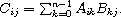">
The product of a scalar x and an m × n matrix A is the m × n matrix C whose entries are defined by the equation
Cij = xAij.
That is, each element of C is the product of x and the corresponding element of A. Vector-vector, vector-matrix, and matrix-vector multiplication may be considered special cases of matrix-matrix multiplication, where a vector is represented as a 1 × n or n × 1 matrix.
Here are a few examples, each preceded by the equivalent operation in standard mathematical notation.
3 × 4 = 12
(mul 3 4)  12
12
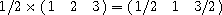">
(mul 1/2 '#(#(1 2 3))) #(#(1/2 1 3/2))
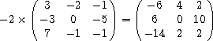">
(mul -2
'#(#(3 -2 -1)
#(-3 0 -5)
#(7 -1 -1))) #(#(-6 4 2)
 #(6 0 10)
#(6 0 10)
#(-14 2 2))
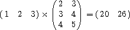">
(mul '#(#(1 2 3))
'#(#(2 3)
#(3 4)
#(4 5))) #(#(20 26))
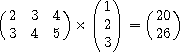">
(mul '#(#(2 3 4)
#(3 4 5))
'#(#(1) #(2) #(3))) #(#(20) #(26))
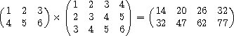">
(mul '#(#(1 2 3)
#(4 5 6))
'#(#(1 2 3 4)
#(2 3 4 5)
#(3 4 5 6))) #(#(14 20 26 32)
#(32 47 62 77))
The code for mul and its helpers, which is structured as a library, appears below. The first few definitions establish a set of procedures that support the matrix data type. A matrix is a vector of vectors. Included are a procedure to create matrices, procedures to access and assign matrix elements, and a matrix predicate. Following these definitions is the definition of mul itself. Inside the lambda expression for mul are a set of definitions for help procedures that support mul.
mul checks the types of its arguments and chooses the appropriate help procedure to do the work. Each helper operates on arguments of specific types. For example, mat-sca-mul multiplies a matrix by a scalar. If the type of either argument is invalid or the arguments are incompatible, e.g., rows or columns do not match up, mul or one of its helpers raises an exception.
(library (tspl matrix)
(export make-matrix matrix? matrix-rows matrix-columns
matrix-ref matrix-set! mul)
(import (rnrs))
; make-matrix creates a matrix (a vector of vectors).
(define make-matrix
(lambda (rows columns)
(do ([m (make-vector rows)]
[i 0 (+ i 1)])
((= i rows) m)
(vector-set! m i (make-vector columns)))))
; matrix? checks to see if its argument is a matrix.
; It isn't foolproof, but it's generally good enough.
(define matrix?
(lambda (x)
(and (vector? x)
(> (vector-length x) 0)
(vector? (vector-ref x 0)))))
; matrix-rows returns the number of rows in a matrix.
(define matrix-rows
(lambda (x)
(vector-length x)))
; matrix-columns returns the number of columns in a matrix.
(define matrix-columns
(lambda (x)
(vector-length (vector-ref x 0))))
; matrix-ref returns the jth element of the ith row.
(define matrix-ref
(lambda (m i j)
(vector-ref (vector-ref m i) j)))
; matrix-set! changes the jth element of the ith row.
(define matrix-set!
(lambda (m i j x)
(vector-set! (vector-ref m i) j x)))
; mat-sca-mul multiplies a matrix by a scalar.
(define mat-sca-mul
(lambda (m x)
(let* ([nr (matrix-rows m)]
[nc (matrix-columns m)]
[r (make-matrix nr nc)])
(do ([i 0 (+ i 1)])
((= i nr) r)
(do ([j 0 (+ j 1)])
((= j nc))
(matrix-set! r i j (* x (matrix-ref m i j))))))))
; mat-mat-mul multiplies one matrix by another, after verifying
; that the first matrix has as many columns as the second
; matrix has rows.
(define mat-mat-mul
(lambda (m1 m2)
(let* ([nr1 (matrix-rows m1)]
[nr2 (matrix-rows m2)]
[nc2 (matrix-columns m2)]
[r (make-matrix nr1 nc2)])
(unless (= (matrix-columns m1) nr2) (match-error m1 m2))
(do ([i 0 (+ i 1)])
((= i nr1) r)
(do ([j 0 (+ j 1)])
((= j nc2))
(do ([k 0 (+ k 1)]
[a 0 (+ a
(* (matrix-ref m1 i k)
(matrix-ref m2 k j)))])
((= k nr2)
(matrix-set! r i j a))))))))
; type-error is called to complain when mul receives an invalid
; type of argument.
(define type-error
(lambda (what)
(assertion-violation 'mul
"not a number or matrix"
what)))
; match-error is called to complain when mul receives a pair of
; incompatible arguments.
(define match-error
(lambda (what1 what2)
(assertion-violation 'mul
"incompatible operands" what1
what2)))
; mul is the generic matrix/scalar multiplication procedure
(define mul
(lambda (x y)
(cond
[(number? x)
(cond
[(number? y) (* x y)]
[(matrix? y) (mat-sca-mul y x)]
[else (type-error y)])]
[(matrix? x)
(cond
[(number? y) (mat-sca-mul x y)]
[(matrix? y) (mat-mat-mul x y)]
[else (type-error y)])]
[else (type-error x)]))))
This section illustrates a list sorting algorithm based on a simple technique known as merge sorting. The procedure sort defined here accepts two arguments: a predicate and a list, just like the built-in list-sort. It returns a list containing the elements of the old list sorted according to the predicate. As with list-sort, the predicate should be a procedure that expects two arguments and returns #t if its first argument must precede its second in the sorted list and false otherwise. That is, if the predicate is applied to two elements x and y, where x appears after y in the input list, it should return true only if x should appear before y in the output list. If this constraint is met, sort will perform a stable sort; with a stable sort, two elements that are already sorted with respect to each other will appear in the output in the same order in which they appeared in the input. Thus, sorting a list that is already sorted will result in no reordering, even if there are equivalent elements.
(sort < '(3 4 2 1 2 5)) (1 2 2 3 4 5)
(sort > '(0.5 1/2)) (0.5 1/2)
(sort > '(1/2 0.5)) (1/2 0.5)
(list->string
(sort char>?
(string->list "coins"))) "sonic"
A companion procedure, merge, is also defined by the code. merge accepts a predicate and two sorted lists and returns a merged list in sorted order of the elements of the two lists. With a properly defined predicate, merge is also stable in the sense that an item from the first list will appear before an item from the second list unless it is necessary that the item from the second list appear first.
(merge char<?
'(#\a #\c)
'(#\b #\c #\d)) (#\a #\b #\c #\c #\d)
(merge <
'(1/2 2/3 3/4)
'(0.5 0.6 0.7)) (1/2 0.5 0.6 2/3 0.7 3/4)
(list->string
(merge char>?
(string->list "old")
(string->list "toe"))) "tooled"
The merge sorting algorithm is simple and elegant. The input list is split into two approximately equal sublists. These sublists are sorted recursively, yielding two sorted lists. The sorted lists are then merged to form a single sorted list. The base case for the recursion is a list of one element, which is already sorted.
To reduce overhead, the implementation computes the length of the input list once, in sort, rather than at each step of the recursion, in dosort. This also allows dosort to isolate the first half of the list merely by halving the length, saving the cost of allocating a new list containing half of the elements. As a result, ls may contain more than n elements, but only the first n elements are considered part of the list.
(library (tspl sort)
(export sort merge)
(import (rnrs))
(define dosort
(lambda (pred? ls n)
(if (= n 1)
(list (car ls))
(let ([i (div n 2)])
(domerge pred?
(dosort pred? ls i)
(dosort pred? (list-tail ls i) (- n i)))))))
(define domerge
(lambda (pred? l1 l2)
(cond
[(null? l1) l2]
[(null? l2) l1]
[(pred? (car l2) (car l1))
(cons (car l2) (domerge pred? l1 (cdr l2)))]
[else (cons (car l1) (domerge pred? (cdr l1) l2))])))
(define sort
(lambda (pred? l)
(if (null? l) l (dosort pred? l (length l)))))
(define merge
(lambda (pred? l1 l2)
(domerge pred? l1 l2))))
This example describes a syntactic extension, set-of, that allows the construction of sets represented as lists with no repeated elements [22]. It uses define-syntax and syntax-rules to compile set expressions into recursion expressions. The expanded code is often as efficient as that which can be produced by hand.
A set-of expression takes the following form.
(set-of expr clause ...)
expr describes the elements of the set in terms of the bindings established by the set-of clauses clause .... Each clause can take one of three forms:
(set-of x
(x in '(a b c))) (a b c)
(set-of x
(x in '(1 2 3 4))
(even? x)) (2 4)
(set-of (cons x y)
(x in '(1 2 3))
(y is (* x x))) ((1 . 1) (2 . 4) (3 . 9))
(set-of (cons x y)
(x in '(a b))
(y in '(1 2))) ((a . 1) (a . 2) (b . 1) (b . 2))
A set-of expression is transformed into nested let, named let, and if expressions, corresponding to each is, in, or predicate subexpression. For example, the simple expression
(set-of x (x in '(a b c)))
is transformed into
(let loop ([set '(a b c)])
(if (null? set)
'()
(let ([x (car set)])
(set-cons x (loop (cdr set))))))
The expression
(set-of x (x in '(1 2 3 4)) (even? x))
is transformed into
(let loop ([set '(1 2 3 4)])
(if (null? set)
'()
(let ([x (car set)])
(if (even? x)
(set-cons x (loop (cdr set)))
(loop (cdr set))))))
The more complicated expression
(set-of (cons x y) (x in '(1 2 3)) (y is (* x x)))
is transformed into
(let loop ([set '(1 2 3)])
(if (null? set)
'()
(let ([x (car set)])
(let ([y (* x x)])
(set-cons (cons x y)
(loop (cdr set)))))))
Finally, the expression
(set-of (cons x y) (x in '(a b)) (y in '(1 2)))
is transformed into nested named let expressions:
(let loop1 ([set1 '(a b)])
(if (null? set1)
'()
(let ([x (car set1)])
(let loop2 ([set2 '(1 2)])
(if (null? set2)
(loop1 (cdr set1))
(let ([y (car set2)])
(set-cons (cons x y)
(loop2 (cdr set2)))))))))
These are fairly straightforward transformations, except that the base case for the recursion on nested named let expressions varies depending upon the level. The base case for the outermost named let is always the empty list (), while the base case for an internal named let is the recursion step for the next outer named let. In order to handle this, the definition of set-of employs a help syntactic extension set-of-help. set-of-help takes an additional expression, base, which is the base case for recursion at the current level.
(library (tspl sets)
(export set-of set-cons in is)
(import (rnrs))
; set-of uses helper syntactic extension set-of-help, passing it
; an initial base expression of '()
(define-syntax set-of
(syntax-rules ()
[(_ e m ...)
(set-of-help e '() m ...)]))
; set-of-help recognizes in, is, and predicate expressions and
; changes them into nested named let, let, and if expressions.
(define-syntax set-of-help
(syntax-rules (in is)
[(_ e base) (set-cons e base)]
[(_ e base (x in s) m ...)
(let loop ([set s])
(if (null? set)
base
(let ([x (car set)])
(set-of-help e (loop (cdr set)) m ...))))]
[(_ e base (x is y) m ...)
(let ([x y]) (set-of-help e base m ...))]
[(_ e base p m ...)
(if p (set-of-help e base m ...) base)]))
; since in and is are used as auxiliary keywords by set-of, the
; library must export definitions for them as well
(define-syntax in
(lambda (x)
(syntax-violation 'in "misplaced auxiliary keyword" x)))
(define-syntax is
(lambda (x)
(syntax-violation 'is "misplaced auxiliary keyword" x)))
; set-cons returns the original set y if x is already in y.
(define set-cons
(lambda (x y)
(if (memv x y)
y
(cons x y)))))
(union) ()
(union '(a b c)) (a b c)
(union '(2 5 4) '(9 4 3)) (2 5 9 4 3)
(union '(1 2) '(2 4) '(4 8)) (1 2 4 8)
(define map1
(lambda (f ls)
(set-of (f x) (x in ls))))
(map1 - '(1 2 3 2)) (-1 -3 -2)
Why does this not work? What could be changed to make it work?
This program demonstrates several basic programming techniques, including string and character manipulation, file input/output, data structure manipulation, and recursion. The program is adapted from Chapter 6 of The C Programming Language [19]. One reason for using this particular example is to show how a C program might look when converted almost literally into Scheme.
A few differences between the Scheme program and the original C program are worth noting. First, the Scheme version employs a different protocol for file input and output. Rather than implicitly using the standard input and output ports, it requires that filenames be passed in, thus demonstrating the opening and closing of files. Second, the procedure get-word returns one of three values: a string (the word), a nonalphabetic character, or an eof value. The original C version returned a flag for letter (to say that a word was read) or a nonalphabetic character. Furthermore, the C version passed in a string to fill and a limit on the number of characters in the string; the Scheme version builds a new string of whatever length is required (the characters in the word are held in a list until the end of the word has been found, then converted into a string with list->string). Finally, char-type uses the primitive Scheme character predicates char-alphabetic? and char-numeric? to determine whether a character is a letter or digit.
The main program, frequency, takes an input filename and an output filename as arguments, e.g., (frequency "pickle" "freq.out") prints the frequency count for each word in the file "pickle" to the file "freq.out." As frequency reads words from the input file, it inserts them into a binary tree structure (using a binary sorting algorithm). Duplicate entries are recorded by incrementing the count associated with each word. Once end of file is reached, the program traverses the tree, printing each word with its count.
Assume that the file "pickle" contains the following text.
Peter Piper picked a peck of pickled peppers;
A peck of pickled peppers Peter Piper picked.
If Peter Piper picked a peck of pickled peppers,
Where's the peck of pickled peppers Peter Piper picked?
Then, after typing (frequency "pickle" "freq.out"), the file "freq.out" should contain the following.
1 A
1 If
4 Peter
4 Piper
1 Where
2 a
4 of
4 peck
4 peppers
4 picked
4 pickled
1 s
1 the
The code for the word-counting program is structured as a top-level program, with the script header recommended in the scripts chapter of the nonnormative appendices to the Revised6 Report [25]. It takes the names of input and output files from the command line.
#! /usr/bin/env scheme-script
(import (rnrs))
;;; If the next character on p is a letter, get-word reads a word
;;; from p and returns it in a string. If the character is not a
;;; letter, get-word returns the character (on eof, the eof-object).
(define get-word
(lambda (p)
(let ([c (get-char p)])
(if (eq? (char-type c) 'letter)
(list->string
(let loop ([c c])
(cons
c
(if (memq (char-type (lookahead-char p))
'(letter digit))
(loop (get-char p))
'()))))
c))))
;;; char-type tests for the eof-object first, since the eof-object
;;; may not be a valid argument to char-alphabetic? or char-numeric?
;;; It returns the eof-object, the symbol letter, the symbol digit,
;;; or the argument itself if it is not a letter or digit.
(define char-type
(lambda (c)
(cond
[(eof-object? c) c]
[(char-alphabetic? c) 'letter]
[(char-numeric? c) 'digit]
[else c])))
;;; Tree nodes are represented as a record type with four fields: word,
;;; left, right, and count. Only one field, word, is initialized by an
;;; argument to the constructor procedure make-tnode. The remaining
;;; fields are initialized by the constructor and changed by subsequent
;;; operations.
(define-record-type tnode
(fields (immutable word)
(mutable left)
(mutable right)
(mutable count))
(protocol
(lambda (new)
(lambda (word)
(new word '() '() 1)))))
;;; If the word already exists in the tree, tree increments its
;;; count. Otherwise, a new tree node is created and put into the
;;; tree. In any case, the new or modified tree is returned.
(define tree
(lambda (node word)
(cond
[(null? node) (make-tnode word)]
[(string=? word (tnode-word node))
(tnode-count-set! node (+ (tnode-count node) 1))
node]
[(string<? word (tnode-word node))
(tnode-left-set! node (tree (tnode-left node) word))
node]
[else
(tnode-right-set! node (tree (tnode-right node) word))
node])))
;;; tree-print prints the tree in "in-order," i.e., left subtree,
;;; then node, then right subtree. For each word, the count and the
;;; word are printed on a single line.
(define tree-print
(lambda (node p)
(unless (null? node)
(tree-print (tnode-left node) p)
(put-datum p (tnode-count node))
(put-char p #\space)
(put-string p (tnode-word node))
(newline p)
(tree-print (tnode-right node) p))))
;;; frequency is the driver routine. It opens the files, reads the
;;; words, and enters them into the tree. When the input port
;;; reaches end-of-file, it prints the tree and closes the ports.
(define frequency
(lambda (infn outfn)
(let ([ip (open-file-input-port infn (file-options)
(buffer-mode block) (native-transcoder))]
[op (open-file-output-port outfn (file-options)
(buffer-mode block) (native-transcoder))])
(let loop ([root '()])
(let ([w (get-word ip)])
(cond
[(eof-object? w) (tree-print root op)]
[(string? w) (loop (tree root w))]
[else (loop root)])))
(close-port ip)
(close-port op))))
(unless (= (length (command-line)) 3)
(put-string (current-error-port) "usage: ")
(put-string (current-error-port) (car (command-line)))
(put-string (current-error-port) " input-filename output-filename\n")
(exit #f))
(frequency (cadr (command-line)) (caddr (command-line)))
Printing Scheme objects may seem like a complicated process, but in fact a rudimentary printer is straightforward, as this example demonstrates. put-datum, write, and display are all implemented by the same code. Sophisticated printers often support various printer controls and handle printing of cyclic objects, but the one given here is completely basic.
The main driver for the program is a procedure wr, which takes an object to print x, a flag d?, and a port p. The flag d? (for display) is #t if the code is to display the object, #f otherwise. The d? flag is important only for characters and strings. Recall from Section 7.8 that display prints strings without the enclosing quote marks and characters without the #\ syntax.
The entry points for write and display handle the optionality of the second (port) argument, passing the value of current-output-port when no port argument is provided.
Procedures, ports, and the end-of-file object are printed as #<procedure>, #<port>, and #<eof>. Unrecognized types of values are printed as #<unknown>. So, for example, a hashtable, enumeration set, and object of some implementation-specific type will all print as #<unknown>.
(library (tspl printer)
(export put-datum write display)
(import (except (rnrs) put-datum write display))
; define these here to avoid confusing paren-balancers
(define lparen #\()
(define rparen #\))
; wr is the driver, dispatching on the type of x
(define wr
(lambda (x d? p)
(cond
[(symbol? x) (put-string p (symbol->string x))]
[(pair? x) (wrpair x d? p)]
[(number? x) (put-string p (number->string x))]
[(null? x) (put-string p "()")]
[(boolean? x) (put-string p (if x "#t" "#f"))]
[(char? x) (if d? (put-char p x) (wrchar x p))]
[(string? x) (if d? (put-string p x) (wrstring x p))]
[(vector? x) (wrvector x d? p)]
[(bytevector? x) (wrbytevector x d? p)]
[(eof-object? x) (put-string p "#<eof>")]
[(port? x) (put-string p "#<port>")]
[(procedure? x) (put-string p "#<procedure>")]
[else (put-string p "#<unknown>")])))
; wrpair handles pairs and nonempty lists
(define wrpair
(lambda (x d? p)
(put-char p lparen)
(let loop ([x x])
(wr (car x) d? p)
(cond
[(pair? (cdr x)) (put-char p #\space) (loop (cdr x))]
[(null? (cdr x))]
[else (put-string p " . ") (wr (cdr x) d? p)]))
(put-char p rparen)))
; wrchar handles characters. Used only when d? is #f.
(define wrchar
(lambda (x p)
(put-string p "#\\")
(cond
[(assq x '((#\alarm . "alarm") (#\backspace . "backspace")
(#\delete . "delete") (#\esc . "esc")
(#\newline . "newline") (#\nul . "nul")
(#\page . "page") (#\return . "return")
(#\space . "space") (#\tab . "tab")
(#\vtab . "vtab"))) =>
(lambda (a) (put-string p (cdr a)))]
[else (put-char p x)])))
; wrstring handles strings. Used only when d? is #f.
(define wrstring
(lambda (x p)
(put-char p #\")
(let ([n (string-length x)])
(do ([i 0 (+ i 1)])
((= i n))
(let ([c (string-ref x i)])
(case c
[(#\alarm) (put-string p "\\a")]
[(#\backspace) (put-string p "\\b")]
[(#\newline) (put-string p "\\n")]
[(#\page) (put-string p "\\f")]
[(#\return) (put-string p "\\r")]
[(#\tab) (put-string p "\\t")]
[(#\vtab) (put-string p "\\v")]
[(#\") (put-string p "\\\"")]
[(#\\) (put-string p "\\\\")]
[else (put-char p c)]))))
(put-char p #\")))
(define wrvector
(lambda (x d? p)
(put-char p #\#)
(let ([n (vector-length x)])
(do ([i 0 (+ i 1)] [sep lparen #\space])
((= i n))
(put-char p sep)
(wr (vector-ref x i) d? p)))
(put-char p rparen)))
(define wrbytevector
(lambda (x d? p)
(put-string p "#vu8")
(let ([n (bytevector-length x)])
(do ([i 0 (+ i 1)] [sep lparen #\space])
((= i n))
(put-char p sep)
(wr (bytevector-u8-ref x i) d? p)))
(put-char p rparen)))
; check-and-wr is called when the port is supplied
(define check-and-wr
(lambda (who x d? p)
(unless (and (output-port? p) (textual-port? p))
(assertion-violation who "invalid argument" p))
(wr x d? p)))
; put-datum calls wr with d? set to #f
(define put-datum
(lambda (p x)
(check-and-wr 'put-datum x #f p)))
; write calls wr with d? set to #f
(define write
(case-lambda
[(x) (wr x #f (current-output-port))]
[(x p) (check-and-wr 'write x #f p)]))
; display calls wr with d? set to #t
(define display
(case-lambda
[(x) (wr x #t (current-output-port))]
[(x p) (check-and-wr 'display x #t p)])))
(object->string '(a b c)) "(a b c)"
(object->string "hello") "\"hello\""
You may be surprised just how easy this change is to make.
It is often necessary to print strings containing the printed representations of Scheme objects, especially numbers. Doing so with Scheme's standard output routines can be tedious. For example, the tree-print procedure of Section 12.4 requires a sequence of four calls to output routines to print a simple one-line message:
(put-datum p (tnode-count node))
(put-char p #\space)
(put-string p (tnode-word node))
(newline p)
The formatted output facility defined in this section allows these four calls to be replaced by the single call to fprintf below.
(fprintf p "~s ~a~%" (tnode-count node) (tnode-word node))
fprintf expects a port argument, a control string, and an indefinite number of additional arguments that are inserted into the output as specified by the control string. In the example, the value of (tnode-count node) is written first, in place of ~s. This is followed by a space and the displayed value of (tnode-word node), in place of ~a. The ~% is replaced in the output with a newline.
The procedure printf, also defined in this section, is like fprintf except that no port argument is expected and output is sent to the current output port.
~s, ~a, and ~% are format directives; ~s causes the first unused argument after the control string to be printed to the output via write, ~a causes the first unused argument to be printed via display, and ~% simply causes a newline character to be printed. The simple implementation of fprintf below recognizes only one other format directive, ~~, which inserts a tilde into the output. For example,
(printf "The string ~s displays as ~~.~%" "~")
prints
The string "~" displays as ~.
(library (tspl formatted-output)
(export printf fprintf)
(import (rnrs))
; dofmt does all of the work. It loops through the control string
; recognizing format directives and printing all other characters
; without interpretation. A tilde at the end of a control string is
; treated as an ordinary character. No checks are made for proper
; inputs. Directives may be given in either lower or upper case.
(define dofmt
(lambda (p cntl args)
(let ([nmax (- (string-length cntl) 1)])
(let loop ([n 0] [a args])
(if (<= n nmax)
(let ([c (string-ref cntl n)])
(if (and (char=? c #\~) (< n nmax))
(case (string-ref cntl (+ n 1))
[(#\a #\A)
(display (car a) p)
(loop (+ n 2) (cdr a))]
[(#\s #\S)
(write (car a) p)
(loop (+ n 2) (cdr a))]
[(#\%)
(newline p)
(loop (+ n 2) a)]
[(#\~)
(put-char p #\~) (loop (+ n 2) a)]
[else
(put-char p c) (loop (+ n 1) a)])
(begin
(put-char p c)
(loop (+ n 1) a)))))))))
; printf and fprintf differ only in that fprintf passes its
; port argument to dofmt while printf passes the current output
; port.
(define printf
(lambda (control . args)
(dofmt (current-output-port) control args)))
(define fprintf
(lambda (p control . args)
(dofmt p control args))))
| a. | ~b or ~B: print the next unused argument,
which must be a number, in binary;
|
| b. | ~o or ~O: print the next unused argument,
which must be a number, in octal; and
|
| c. | ~x or ~X: print the next unused argument, which must be a number, in hexadecimal. |
For example:
(printf "#x~x #o~o #b~b~%" 16 8 2)
would print
#x10 #o10 #b10
(printf "--- ~@ ---" "> ~s <" '(a b c))
would print
---> (a b c) <---
(let ([x 3] [y 4])
(format "~s + ~s = ~s" x y (+ x y))) "3 + 4 = 7"
(let ([x 'abc] [y '(def)])
(format "(cons '~5s '~5s) = ~5s"
x y (cons x y))) "(cons 'abc '(def)) = (abc def)"
[Hint: Use format recursively.]
The program described in this section is a meta-circular interpreter for Scheme, i.e., it is an interpreter for Scheme written in Scheme. The interpreter shows how small Scheme is when the core structure is considered independently from its syntactic extensions and primitives. It also illustrates interpretation techniques that can be applied equally well to languages other than Scheme.
The relative simplicity of the interpreter is somewhat misleading. An interpreter for Scheme written in Scheme can be quite a bit simpler than one written in most other languages. Here are a few reasons why this one is simpler.
Converting the interpreter to run in a language other than Scheme may require explicit support for some or all of these items.
The interpreter stores lexical bindings in an environment, which is simply an association list (see page 165). Evaluation of a lambda expression results in the creation of a procedure within the scope of variables holding the environment and the lambda body. Subsequent application of the procedure combines the new bindings (the actual parameters) with the saved environment.
The interpreter handles only the core syntactic forms described in Section 3.1, and it recognizes bindings for only a handful of primitive procedures. It performs no error checking.
(interpret 3) 3
(interpret '(cons 3 4)) (3 . 4)
(interpret
'((lambda (x . y)
(list x y))
'a 'b 'c 'd)) (a (b c d))
(interpret
'(((call/cc (lambda (k) k))
(lambda (x) x))
"HEY!")) "HEY!"
(interpret
'((lambda (memq)
(memq memq 'a '(b c a d e)))
(lambda (memq x ls)
(if (null? ls) #f
(if (eq? (car ls) x)
ls
(memq memq x (cdr ls))))))) (a d e)
(interpret
'((lambda (reverse)
(set! reverse
(lambda (ls new)
(if (null? ls)
new
(reverse (cdr ls) (cons (car ls) new)))))
(reverse '(a b c d e) '()))
#f)) (e d c b a)
(library (tspl interpreter)
(export interpret)
(import (rnrs) (rnrs mutable-pairs))
; primitive-environment contains a small number of primitive
; procedures; it can be extended easily with additional primitives.
(define primitive-environment
`((apply . ,apply) (assq . ,assq) (call/cc . ,call/cc)
(car . ,car) (cadr . ,cadr) (caddr . ,caddr)
(cadddr . ,cadddr) (cddr . ,cddr) (cdr . ,cdr)
(cons . ,cons) (eq? . ,eq?) (list . ,list) (map . ,map)
(memv . ,memv) (null? . ,null?) (pair? . ,pair?)
(read . ,read) (set-car! . ,set-car!)
(set-cdr! . ,set-cdr!) (symbol? . ,symbol?)))
; new-env returns a new environment from a formal parameter
; specification, a list of actual parameters, and an outer
; environment. The symbol? test identifies "improper"
; argument lists. Environments are association lists,
; associating variables with values.
(define new-env
(lambda (formals actuals env)
(cond
[(null? formals) env]
[(symbol? formals) (cons (cons formals actuals) env)]
[else
(cons
(cons (car formals) (car actuals))
(new-env (cdr formals) (cdr actuals) env))])))
; lookup finds the value of the variable var in the environment
; env, using assq. Assumes var is bound in env.
(define lookup
(lambda (var env)
(cdr (assq var env))))
; assign is similar to lookup but alters the binding of the
; variable var by changing the cdr of the association pair
(define assign
(lambda (var val env)
(set-cdr! (assq var env) val)))
; exec evaluates the expression, recognizing a small set of core forms.
(define exec
(lambda (expr env)
(cond
[(symbol? expr) (lookup expr env)]
[(pair? expr)
(case (car expr)
[(quote) (cadr expr)]
[(lambda)
(lambda vals
(let ([env (new-env (cadr expr) vals env)])
(let loop ([exprs (cddr expr)])
(if (null? (cdr exprs))
(exec (car exprs) env)
(begin
(exec (car exprs) env)
(loop (cdr exprs)))))))]
[(if)
(if (exec (cadr expr) env)
(exec (caddr expr) env)
(exec (cadddr expr) env))]
[(set!) (assign (cadr expr) (exec (caddr expr) env) env)]
[else
(apply
(exec (car expr) env)
(map (lambda (x) (exec x env)) (cdr expr)))])]
[else expr])))
; interpret starts execution with the primitive environment.
(define interpret
(lambda (expr)
(exec expr primitive-environment))))
[(lambda)
(lambda vals
(let ([env (new-env (cadr expr) vals env)])
(let loop ([exprs (cddr expr)])
(let ([val (exec (car exprs) env)])
(if (null? (cdr exprs))
val
(loop (cdr exprs)))))))]
Why would this be incorrect? [Hint: What property of Scheme would be violated?]
This example demonstrates a syntactic extension that facilitates the definition of simple abstract objects (see Section 2.9). This facility has unlimited potential as the basis for a complete object-oriented subsystem in Scheme.
Abstract objects are similar to basic data structures such as pairs and vectors. Rather than being manipulated via access and assignment operators, however, abstract objects respond to messages. The valid messages and the actions to be taken for each message are defined by code within the object itself rather than by code outside the object, resulting in more modular and potentially more secure programming systems. The data local to an abstract object is accessible only through the actions performed by the object in response to the messages.
A particular type of abstract object is defined with define-object, which has the general form
(define-object (name var1 ...)
((var2 expr) ...)
((msg action) ...))
The first set of bindings ((var2 expr) ...) may be omitted. define-object defines a procedure that is called to create new abstract objects of the given type. This procedure is called name, and the arguments to this procedure become the values of the local variables var1 .... After the procedure is invoked, the variables var2 ... are bound to the values expr ... in sequence (as with let*) and the messages msg ... are bound to the procedure values action ... in a mutually recursive fashion (as with letrec). Within these bindings, the new abstract object is created; this object is the value of the creation procedure.
The syntactic form send-message is used to send messages to abstract objects. (send-message object msg arg ...) sends object the message msg with arguments arg .... When an object receives a message, the arg ... become the parameters to the action procedure associated with the message, and the value returned by this procedure is returned by send-message.
The following examples should help to clarify how abstract objects are defined and used. The first example is a simple kons object that is similar to Scheme's built-in pair object type, except that to access or assign its fields requires sending it messages.
(define-object (kons kar kdr)
((get-car (lambda () kar))
(get-cdr (lambda () kdr))
(set-car! (lambda (x) (set! kar x)))
(set-cdr! (lambda (x) (set! kdr x)))))
(define p (kons 'a 'b))
(send-message p get-car) a
(send-message p get-cdr) b
(send-message p set-cdr! 'c)
(send-message p get-cdr) c
The simple kons object does nothing but return or assign one of the fields as requested. What makes abstract objects interesting is that they can be used to restrict access or perform additional services. The following version of kons requires that a password be given with any request to assign one of the fields. This password is a parameter to the kons procedure.
(define-object (kons kar kdr pwd)
((get-car (lambda () kar))
(get-cdr (lambda () kar))
(set-car!
(lambda (x p)
(if (string=? p pwd)
(set! kar x))))
(set-cdr!
(lambda (x p)
(if (string=? p pwd)
(set! kar x))))))
(define p1 (kons 'a 'b "magnificent"))
(send-message p1 set-car! 'c "magnificent")
(send-message p1 get-car) c
(send-message p1 set-car! 'd "please")
(send-message p1 get-car) c
(define p2 (kons 'x 'y "please"))
(send-message p2 set-car! 'z "please")
(send-message p2 get-car) z
One important ability of an abstract object is that it can keep statistics on messages sent to it. The following version of kons counts accesses to the two fields. This version also demonstrates the use of explicitly initialized local bindings.
(define-object (kons kar kdr)
((count 0))
((get-car
(lambda ()
(set! count (+ count 1))
kar))
(get-cdr
(lambda ()
(set! count (+ count 1))
kdr))
(accesses
(lambda () count))))
(define p (kons 'a 'b))
(send-message p get-car) a
(send-message p get-cdr) b
(send-message p accesses) 2
(send-message p get-cdr) b
(send-message p accesses) 3
The implementation of define-object is straightforward. The object definition is transformed into a definition of the object creation procedure. This procedure is the value of a lambda expression whose arguments are those specified in the definition. The body of the lambda consists of a let* expression to bind the local variables and a letrec expression to bind the message names to the action procedures. The body of the letrec is another lambda expression whose value represents the new object. The body of this lambda expression compares the messages passed in with the expected messages using a case expression and applies the corresponding action procedure to the remaining arguments.
For example, the definition
(define-object (kons kar kdr)
((count 0))
((get-car
(lambda ()
(set! count (+ count 1))
kar))
(get-cdr
(lambda ()
(set! count (+ count 1))
kdr))
(accesses
(lambda () count))))
is transformed into
(define kons
(lambda (kar kdr)
(let* ([count 0])
(letrec ([get-car
(lambda ()
(set! count (+ count 1)) kar)]
[get-cdr
(lambda ()
(set! count (+ count 1)) kdr)]
[accesses (lambda () count)])
(lambda (msg . args)
(case msg
[(get-car) (apply get-car args)]
[(get-cdr) (apply get-cdr args)]
[(accesses) (apply accesses args)]
[else (assertion-violation 'kons
"invalid message"
(cons msg args))]))))))
(library (tspl oop)
(export define-object send-message)
(import (rnrs))
; define-object creates an object constructor that uses let* to bind
; local fields and letrec to define the exported procedures. An
; object is itself a procedure that accepts messages corresponding
; to the names of the exported procedures. The second pattern is
; used to allow the set of local fields to be omitted.
(define-syntax define-object
(syntax-rules ()
[(_ (name . varlist)
((var1 val1) ...)
((var2 val2) ...))
(define name
(lambda varlist
(let* ([var1 val1] ...)
(letrec ([var2 val2] ...)
(lambda (msg . args)
(case msg
[(var2) (apply var2 args)]
...
[else
(assertion-violation 'name
"invalid message"
(cons msg args))]))))))]
[(_ (name . varlist) ((var2 val2) ...))
(define-object (name . varlist)
()
((var2 val2) ...))]))
; send-message abstracts the act of sending a message from the act
; of applying a procedure and allows the message to be unquoted.
(define-syntax send-message
(syntax-rules ()
[(_ obj msg arg ...)
(obj 'msg arg ...)])))
The procedure described in this section uses Scheme's complex arithmetic to compute the discrete Fourier transform (DFT) of a sequence of values [4]. Discrete Fourier transforms are used to analyze and process sampled signal sequences in a wide variety of digital electronics applications such as pattern recognition, bandwidth compression, radar target detection, and weather surveillance.
The DFT of a sequence of N input values,
{x(n)}n=0N-1,
is the sequence of N output values,
{X(m)}m=0N-1,
each defined by the equation

It is convenient to abstract away the constant amount (for given N)

in order to obtain the more concise but equivalent equation

A straightforward computation of the N output values, each as a sum of N intermediate values, requires on the order of N2 operations. A fast Fourier transform (FFT), applicable when N is a power of 2, requires only on the order of Nlog2N operations. Although usually presented as a rather complicated iterative algorithm, the fast Fourier transform is most concisely and elegantly expressed as a recursive algorithm.
The recursive algorithm, which is due to Sam Daniel [7], can be derived by manipulating the preceding summation as follows. We first split the summation into two summations and recombine them into one summation from 0 to N/2 - 1.
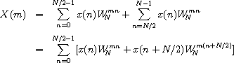">
We then pull out the common factor  .
.
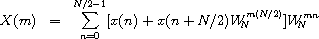">
We can reduce  to 1 when m is even and -1 when m is
odd, since
to 1 when m is even and -1 when m is
odd, since

This allows us to specialize the summation for the even and odd cases of m = 2k and m = 2k + 1, 0 ≤ k ≤ N/2 - 1.
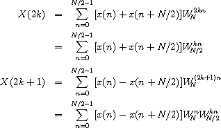">
The resulting summations are DFTs of the N/2-element sequences
{x(n) + x(n + N/2)}n=0N/2-1
and

Thus, the DFT of an N-element sequence can be computed recursively by interlacing the DFTs of two N/2-element sequences. If we select a base case of two elements, we can describe a recursive fast Fourier transformation (RFFT) algorithm as follows. For N = 2,

since 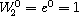">. For N > 2,
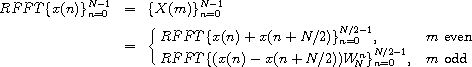">
with the attendant interlacing of even and odd components.
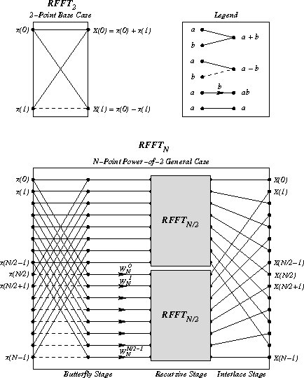">
The diagram above is adapted from one by Sam Daniel [7] and shows the computational structure of the RFFT algorithm. The first stage computes pairwise sums and differences of the first and second halves of the input; this stage is labeled the butterfly stage. The second stage recurs on the resulting subsequences. The third stage interlaces the output of the two recursive calls to RFFT, thus yielding the properly ordered sequence {X(m)}m=0N-1.
The procedure dft accepts a sequence
(list) of values, x, the length of which
is assumed to be a power of 2.
dft precomputes a sequence of powers
of  , 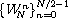">, and calls rfft to
initiate the recursion.
rfft follows the algorithm outlined above.
, 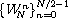">, and calls rfft to
initiate the recursion.
rfft follows the algorithm outlined above.
(define (dft x)
(define (w-powers n)
(let ([pi (* (acos 0.0) 2)])
(let ([delta (/ (* -2.0i pi) n)])
(let f ([n n] [x 0.0])
(if (= n 0)
'()
(cons (exp x) (f (- n 2) (+ x delta))))))))
(define (evens w)
(if (null? w)
'()
(cons (car w) (evens (cddr w)))))
(define (interlace x y)
(if (null? x)
'()
(cons (car x) (cons (car y) (interlace (cdr x) (cdr y))))))
(define (split ls)
(let split ([fast ls] [slow ls])
(if (null? fast)
(values '() slow)
(let-values ([(front back) (split (cddr fast) (cdr slow))])
(values (cons (car slow) front) back)))))
(define (butterfly x w)
(let-values ([(front back) (split x)])
(values
(map + front back)
(map * (map - front back) w))))
(define (rfft x w)
(if (null? (cddr x))
(let ([x0 (car x)] [x1 (cadr x)])
(list (+ x0 x1) (- x0 x1)))
(let-values ([(front back) (butterfly x w)])
(let ([w (evens w)])
(interlace (rfft front w) (rfft back w))))))
(rfft x (w-powers (length x))))

Noting the similarity between this equation and the original equation defining X(m), create a modified version of dft, inverse-dft, that performs the inverse transformation. Verify that (inverse-dft (dft seq)) returns seq for several input sequences seq.
Unification [23] is a pattern-matching technique used in automated theorem proving, type-inference systems, computer algebra, and logic programming, e.g., Prolog [6].
A unification algorithm attempts to make two symbolic expressions
equal by computing a unifying substitution for the expressions.
A substitution is a function that replaces variables with other
expressions.
A substitution must treat all occurrences of a variable the same way,
e.g., if it replaces one occurrence of the variable x by a, it must
replace all occurrences of x by a.
A unifying substitution, or unifier, for two expressions e1 and
e2 is a substitution,  , such that
, such that  .
.
For example, the two expressions f(x) and f(y) can be unified by
substituting x for y (or y for x).
In this case, the unifier could be described as the function
that replaces y with x and leaves other variables unchanged.
On the other hand, the two expressions x + 1 and y + 2 cannot be
unified.
It might appear that substituting 3 for x and 2 for y would
make both expressions equal to 4 and hence equal to each other.
The symbolic expressions, 3 + 1 and 2 + 2, however, still differ.
Two expressions may have more than one unifier. For example, the expressions f(x,y) and f(1,y) can be unified to f(1,y) with the substitution of 1 for x. They may also be unified to f(1,5) with the substitution of 1 for x and 5 for y. The first substitution is preferable, since it does not commit to the unnecessary replacement of y. Unification algorithms typically produce the most general unifier, or mgu, for two expressions. The mgu for two expressions makes no unnecessary substitutions; all other unifiers for the expressions are special cases of the mgu. In the example above, the first substitution is the mgu and the second is a special case.
For the purposes of this program, a symbolic expression can be a variable, a constant, or a function application. Variables are represented by Scheme symbols, e.g., x; a function application is represented by a list with the function name in the first position and its arguments in the remaining positions, e.g., (f x); and constants are represented by zero-argument functions, e.g., (a).
The algorithm presented here finds the mgu for two terms, if it exists, using a continuation-passing style, or CPS (see Section 3.4), approach to recursion on subterms. The procedure unify takes two terms and passes them to a help procedure, uni, along with an initial (identity) substitution, a success continuation, and a failure continuation. The success continuation returns the result of applying its argument, a substitution, to one of the terms, i.e., the unified result. The failure continuation simply returns its argument, a message. Because control passes by explicit continuation within unify (always with tail calls), a return from the success or failure continuation is a return from unify itself.
Substitutions are procedures. Whenever a variable is to be replaced by another term, a new substitution is formed from the variable, the term, and the existing substitution. Given a term as an argument, the new substitution replaces occurrences of its saved variable with its saved term in the result of invoking the saved substitution on the argument expression. Intuitively, a substitution is a chain of procedures, one for each variable in the substitution. The chain is terminated by the initial, identity substitution.
(unify 'x 'y) y
(unify '(f x y) '(g x y)) "clash"
(unify '(f x (h)) '(f (h) y)) (f (h) (h))
(unify '(f (g x) y) '(f y x)) "cycle"
(unify '(f (g x) y) '(f y (g x))) (f (g x) (g x))
(unify '(f (g x) y) '(f y z)) (f (g x) (g x))
(library (tspl unification)
(export unify)
(import (rnrs))
; occurs? returns true if and only if u occurs in v
(define occurs?
(lambda (u v)
(and (pair? v)
(let f ([l (cdr v)])
(and (pair? l)
(or (eq? u (car l))
(occurs? u (car l))
(f (cdr l))))))))
; sigma returns a new substitution procedure extending s by
; the substitution of u with v
(define sigma
(lambda (u v s)
(lambda (x)
(let f ([x (s x)])
(if (symbol? x)
(if (eq? x u) v x)
(cons (car x) (map f (cdr x))))))))
; try-subst tries to substitute u for v but may require a
; full unification if (s u) is not a variable, and it may
; fail if it sees that u occurs in v.
(define try-subst
(lambda (u v s ks kf)
(let ([u (s u)])
(if (not (symbol? u))
(uni u v s ks kf)
(let ([v (s v)])
(cond
[(eq? u v) (ks s)]
[(occurs? u v) (kf "cycle")]
[else (ks (sigma u v s))]))))))
; uni attempts to unify u and v with a continuation-passing
; style that returns a substitution to the success argument
; ks or an error message to the failure argument kf. The
; substitution itself is represented by a procedure from
; variables to terms.
(define uni
(lambda (u v s ks kf)
(cond
[(symbol? u) (try-subst u v s ks kf)]
[(symbol? v) (try-subst v u s ks kf)]
[(and (eq? (car u) (car v))
(= (length u) (length v)))
(let f ([u (cdr u)] [v (cdr v)] [s s])
(if (null? u)
(ks s)
(uni (car u)
(car v)
s
(lambda (s) (f (cdr u) (cdr v) s))
kf)))]
[else (kf "clash")])))
; unify shows one possible interface to uni, where the initial
; substitution is the identity procedure, the initial success
; continuation returns the unified term, and the initial failure
; continuation returns the error message.
(define unify
(lambda (u v)
(uni u
v
(lambda (x) x)
(lambda (s) (s u))
(lambda (msg) msg)))))
Engines are a high-level process abstraction supporting timed preemption [10,15]. Engines may be used to simulate multiprocessing, implement light-weight threads, implement operating system kernels, and perform nondeterministic computations. The engine implementation is one of the more interesting applications of continuations in Scheme.
An engine is created by passing a thunk (procedure of no arguments) to the procedure make-engine. The body of the thunk is the computation to be performed by the engine. An engine itself is a procedure of three arguments:
When an engine is applied to its arguments, it sets up a timer to fire in ticks time units. If the engine computation completes before the timer goes off, the system invokes complete, passing it the number of ticks left over and the value of the computation. If, on the other hand, the timer goes off before the engine computation completes, the system creates a new engine from the continuation of the interrupted computation and passes this engine to expire. complete and expire are invoked in the continuation of the engine invocation.
The following example creates an engine from a trivial computation, 3, and gives the engine 10 ticks.
(define eng
(make-engine
(lambda () 3)))
(eng 10
(lambda (ticks value) value)
(lambda (x) x)) 3
It is often useful to pass list as the complete procedure to an engine, causing the engine to return a list of the ticks remaining and the value if the computation completes.
(eng 10
list
(lambda (x) x)) (9 3)
In the example above, the value was 3 and there were 9 ticks left over, i.e., it took only one unit of fuel to evaluate 3. (The fuel amounts given here are for illustration only. The actual amount may differ.)
Typically, the engine computation does not finish in one try. The following example displays the use of an engine to compute the 10th Fibonacci number (see Section 3.2) in steps.
(define fibonacci
(lambda (n)
(if (< n 2)
n
(+ (fibonacci (- n 1))
(fibonacci (- n 2))))))
(define eng
(make-engine
(lambda ()
(fibonacci 10))))
(eng 50
list
(lambda (new-eng)
(set! eng new-eng)
"expired")) "expired"
(eng 50
list
(lambda (new-eng)
(set! eng new-eng)
"expired")) "expired"
(eng 50
list
(lambda (new-eng)
(set! eng new-eng)
"expired")) "expired"
(eng 50
list
(lambda (new-eng)
(set! eng new-eng)
"expired")) (22 55)
Each time the engine's fuel ran out, the expire procedure assigned eng to the new engine. The entire computation required four allotments of 50 ticks to complete; of the last 50 it used all but 23. Thus, the total amount of fuel used was 177 ticks. This leads us to the following procedure, mileage, which uses engines to "time" a computation.
(define mileage
(lambda (thunk)
(let loop ([eng (make-engine thunk)] [total-ticks 0])
(eng 50
(lambda (ticks value)
(+ total-ticks (- 50 ticks)))
(lambda (new-eng)
(loop new-eng (+ total-ticks 50)))))))
(mileage (lambda () (fibonacci 10))) 178
The choice of 50 for the number of ticks to use each time is arbitrary, of course. It might make more sense to pass a much larger number, say 10000, in order to reduce the number of times the computation is interrupted.
The next procedure, round-robin, could be the basis for a simple time-sharing operating system. round-robin maintains a queue of processes (a list of engines) and cycles through the queue in a round-robin fashion, allowing each process to run for a set amount of time. round-robin returns a list of the values returned by the engine computations in the order that the computations complete.
(define round-robin
(lambda (engs)
(if (null? engs)
'()
((car engs) 1
(lambda (ticks value)
(cons value (round-robin (cdr engs))))
(lambda (eng)
(round-robin
(append (cdr engs) (list eng))))))))
Assuming the amount of computation corresponding to one tick is constant, the effect of round-robin is to return a list of the values sorted from the quickest to complete to the slowest to complete. Thus, when we call round-robin on a list of engines, each computing one of the Fibonacci numbers, the output list is sorted with the earlier Fibonacci numbers first, regardless of the order of the input list.
(round-robin
(map (lambda (x)
(make-engine
(lambda ()
(fibonacci x))))
'(4 5 2 8 3 7 6 2))) (1 1 2 3 5 8 13 21)
More interesting things could happen if the amount of fuel varied each time through the loop. In this case, the computation would be nondeterministic, i.e., the results would vary from call to call.
The following syntactic form, por (parallel-or), returns the first of its expressions to complete with a true value. por is implemented with the procedure first-true, which is similar to round-robin but quits when any of the engines completes with a true value. If all of the engines complete, but none with a true value, first-true (and hence por) returns #f.
(define-syntax por
(syntax-rules ()
[(_ x ...)
(first-true
(list (make-engine (lambda () x)) ...))]))
(define first-true
(lambda (engs)
(if (null? engs)
#f
((car engs) 1
(lambda (ticks value)
(or value (first-true (cdr engs))))
(lambda (eng)
(first-true
(append (cdr engs) (list eng))))))))
Even if one of the expressions is an infinite loop, por can still finish (as long as one of the other expressions completes and returns a true value).
(por 1 2) 1
(por ((lambda (x) (x x)) (lambda (x) (x x)))
(fibonacci 10)) 55
The first subexpression of the second por expression is nonterminating, so the answer is the value of the second subexpression.
Let's turn to the implementation of engines. Any preemptive multitasking primitive must have the ability to interrupt a running process after a given amount of computation. This ability is provided by a primitive timer interrupt mechanism in some Scheme implementations. We will construct a suitable one here.
Our timer system defines three procedures: start-timer, stop-timer, and decrement-timer, which can be described operationally as follows.
Code to implement these procedures is given along with the engine implementation below.
Using the timer system requires inserting calls to decrement-timer in appropriate places. Consuming a timer tick on entry to a procedure usually provides a sufficient level of granularity. This can be accomplished by using timed-lambda as defined below in place of lambda. timed-lambda simply invokes decrement-timer before executing the expressions in its body.
(define-syntax timed-lambda
(syntax-rules ()
[(_ formals exp1 exp2 ...)
(lambda formals (decrement-timer) exp1 exp2 ...)]))
It may be useful to redefine named let and do to use timed-lambda as well, so that recursions expressed with these constructs are timed. If you use this mechanism, do not forget to use the timed versions of lambda and other forms in code run within an engine, or no ticks will be consumed.
Now that we have a suitable timer, we can implement engines in terms of the timer and continuations. We use call/cc in two places in the engine implementation: (1) to obtain the continuation of the computation that invokes the engine so that we can return to that continuation when the engine computation completes or the timer expires, and (2) to obtain the continuation of the engine computation when the timer expires so that we can return to this computation if the newly created engine is subsequently run.
The state of the engine system is contained in two variables local to the engine system: do-complete and do-expire. When an engine is started, the engine assigns to do-complete and do-expire procedures that, when invoked, return to the continuation of the engine's caller to invoke complete or expire. The engine starts (or restarts) the computation by invoking the procedure passed as an argument to make-engine with the specified number of ticks. The ticks and the local procedure timer-handler are then used to start the timer.
Suppose that the timer expires before the engine computation completes. The procedure timer-handler is then invoked. It initiates a call to start-timer but obtains the ticks by calling call/cc with do-expire. Consequently, do-expire is called with a continuation that, if invoked, will restart the timer and continue the interrupted computation. do-expire creates a new engine from this continuation and arranges for the engine's expire procedure to be invoked with the new engine in the correct continuation.
If, on the other hand, the engine computation completes before the timer expires, the timer is stopped and the number of ticks remaining is passed along with the value to do-complete; do-complete arranges for the engine's complete procedure to be invoked with the ticks and value in the correct continuation.
Let's discuss a couple of subtle aspects to this code. The first concerns the method used to start the timer when an engine is invoked. The code would apparently be simplified by letting new-engine start the timer before it initiates or resumes the engine computation, instead of passing the ticks to the computation and letting it start the timer. Starting the timer within the computation, however, prevents ticks from being consumed prematurely. If the engine system itself consumes fuel, then an engine provided with a small amount of fuel may not progress toward completion. (It may, in fact, make negative progress.) If the software timer described above is used, this problem is actually avoided by compiling the engine-making code with the untimed version of lambda.
The second subtlety concerns the procedures created by do-complete and do-expire and subsequently applied by the continuation of the call/cc application. It may appear that do-complete could first invoke the engine's complete procedure, then pass the result to the continuation (and similarly for do-expire) as follows.
(escape (complete value ticks))
This would result in improper treatment of tail recursion, however. The problem is that the current continuation would not be replaced with the continuation stored in escape until the call to the complete procedure returns. Consequently, both the continuation of the running engine and the continuation of the engine invocation could be retained for an indefinite period of time, when in fact the actual engine invocation may appear to be tail-recursive. This is especially inappropriate because the engine interface encourages use of continuation-passing style and hence tail recursion. The round-robin scheduler and first-true provide good examples of this, since the expire procedure in each invokes engines tail-recursively.
We maintain proper treatment of tail recursion by arranging for do-complete and do-expire to escape from the continuation of the running engine before invoking the complete or expire procedures. Since the continuation of the engine invocation is a procedure application, passing it a procedure of no arguments results in application of the procedure in the continuation of the engine invocation.
(library (tspl timer)
(export start-timer stop-timer decrement-timer)
(import (rnrs))
(define clock 0)
(define handler #f)
(define start-timer
(lambda (ticks new-handler)
(set! handler new-handler)
(set! clock ticks)))
(define stop-timer
(lambda ()
(let ([time-left clock])
(set! clock 0)
time-left)))
(define decrement-timer
(lambda ()
(when (> clock 0)
(set! clock (- clock 1))
(when (= clock 0) (handler)))))
(define-syntax timed-lambda
(syntax-rules ()
[(_ formals exp1 exp2 ...)
(lambda formals (decrement-timer) exp1 exp2 ...)])))
(library (tspl engines)
(export make-engine timed-lambda)
(import (rnrs) (tspl timer))
(define make-engine
(let ([do-complete #f] [do-expire #f])
(define timer-handler
(lambda ()
(start-timer (call/cc do-expire) timer-handler)))
(define new-engine
(lambda (resume)
(lambda (ticks complete expire)
((call/cc
(lambda (escape)
(set! do-complete
(lambda (ticks value)
(escape (lambda () (complete ticks value)))))
(set! do-expire
(lambda (resume)
(escape (lambda ()
(expire (new-engine resume))))))
(resume ticks)))))))
(lambda (proc)
(new-engine
(lambda (ticks)
(start-timer ticks timer-handler)
(let ([value (proc)])
(let ([ticks (stop-timer)])
(do-complete ticks value))))))))
(define-syntax timed-lambda
(syntax-rules ()
[(_ formals exp1 exp2 ...)
(lambda formals (decrement-timer) exp1 exp2 ...)])))
(import (rename (tspl engines) (timed-lambda lambda)))
to define make-engine and redefine lambda. Then try out the examples given earlier in this section.
(let ([value (proc)])
(let ([ticks (stop-timer)])
(do-complete ticks value)))
could be replaced with the following.
(let ([value (proc)] [ticks (stop-timer)])
(do-complete value ticks))
Why is this not correct?
(let ([value (proc)])
(do-complete value (stop-timer)))
Why?
R. Kent Dybvig /
Copyright © 2009 The MIT Press. Electronically reproduced by permission.
Illustrations © 2009 Jean-Pierre Hébert
ISBN 978-0-262-51298-5 / LOC QA76.73.S34D93
to order this book / about this book